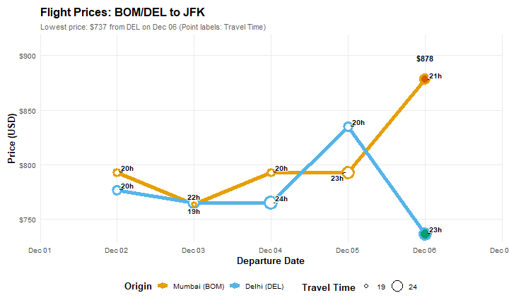
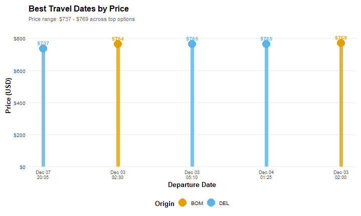

An R package for analyzing, forecasting, and collecting flight data and prices from Google Flights.
Features
- Detailed scraping and querying tools for Google Flights using chromote
- Support for multiple trip types: one-way, round-trip, chain-trip, and perfect-chain
- Flexible date search across multiple airports and date ranges
- Summary tables showing prices by city and date
- Automatic identification of cheapest travel dates
- Visualization functions for price trends and best dates
Installation
You can install the development version of flightanalysis from GitHub:
install.packages('flightanalysis',
repos = c('https://rempsyc.r-universe.dev', 'https://cloud.r-project.org'))
# Or if you need the version from the last hour, install through `remotes`
# install.packages("remotes")
remotes::install_github("rempsyc/flightanalysis")Usage
Creating Flight Queries and Fetching the Data
The main scraping function that makes up the backbone of most functionalities is fa_define_query(). It serves as a data object, preserving the flight information as well as meta-data from your query. fa_fetch_flights() then fetches flight information from that query. Origin and destination airports can be specified as a mix of Airport 3-letter codes, city 3-letter codes, or city names.
# Round-trip
query <- fa_define_query("NYC", "London", Sys.Date() + 32, Sys.Date() + 48)
# Same as:
query <- fa_define_query("New York", "LON", Sys.Date() + 32, Sys.Date() + 48)
query
#> Flight Query( {Not Yet Fetched}
#> 2026-12-04: NYC --> LON
#> 2026-12-20: LON --> NYC
#> )
# Fetch the flight data
flights <- fa_fetch_flights(query)
#> Segment 1/2: NYC -> LON on 2026-12-04
#> [OK] Successfully parsed 23 flights
#> Segment 2/2: LON -> NYC on 2026-12-20
#> [OK] Successfully parsed 28 flights
#> [OK] Total flights retrieved: 51
# View the flight data
head(flights$data[1:11]) |>
knitr::kable()| departure_date | departure_time | arrival_date | arrival_time | origin | origin_city | destination | destination_city | airlines | travel_time | price |
|---|---|---|---|---|---|---|---|---|---|---|
| 2026-12-04 | 18:00 | 2026-12-05 | 06:20 | EWR | Newark | LHR | London | United, Lufthansa, Austrian, Brussels Airlines | 7 hr 20 min | 419 |
| 2026-12-04 | 18:25 | 2026-12-05 | 06:20 | JFK | New York | LHR | London | American, British Airways, Iberia, Finnair, Alaska | 6 hr 55 min | 419 |
| 2026-12-04 | 18:40 | 2026-12-05 | 06:40 | JFK | New York | LHR | London | British Airways, American, Finnair, Iberia, Alaska | 7 hr | 419 |
| 2026-12-04 | 19:01 | 2026-12-05 | 07:15 | JFK | New York | LHR | London | Virgin AtlanticAir France, Delta, KLM | 7 hr 14 min | 419 |
| 2026-12-04 | 20:00 | 2026-12-05 | 08:05 | JFK | New York | LHR | London | DeltaKLM, Virgin Atlantic | 7 hr 5 min | 419 |
| 2026-12-04 | 17:02 | 2026-12-05 | 10:30 | LGA | New York | LHR | London | American, British Airways | 12 hr 28 min | 377 |
The package supports multiple trip types:
-
One-way:
fa_define_query("JFK", "IST", Sys.Date() + 30) -
Round-trip:
fa_define_query("JFK", "IST", Sys.Date() + 30, Sys.Date() + 60) -
Chain-trip:
fa_define_query("JFK", "IST", Sys.Date() + 60, "RDU", "LGA", Sys.Date() + 90) -
Perfect-chain:
fa_define_query("JFK", Sys.Date() + 30, "IST", Sys.Date() + 35, "JFK")
Flexible Date Search
Examples use dates relative to today so they stay runnable. Both Date objects (such as Sys.Date() + 30) and "YYYY-MM-DD" strings are accepted. Dates must be valid calendar dates. Before opening Chrome, fa_fetch_flights() checks every segment against today’s Google Flights search window: today through 330 days ahead, inclusive. Its error reports the offending date and the exact allowed range. Saved queries are checked again when fetched. Airline schedules and fares may be unavailable even inside this window; the observed Google limit may change.
The package supports flexible date search across multiple airports and dates:
# Create query objects for multiple origins and dates
queries <- fa_define_query_range(
origin = c("BOM", "DEL"),
dest = "JFK",
date_min = Sys.Date() + 30,
date_max = Sys.Date() + 34
)
# Fetch all flights
flights <- fa_fetch_flights(queries, verbose = FALSE)
# Create summary table (City × Date with prices)
fa_summarize_prices(flights) |>
knitr::kable()| City | Origin | 2026-12-02 | 2026-12-03 | 2026-12-04 | 2026-12-05 | 2026-12-06 | Average_Price |
|---|---|---|---|---|---|---|---|
| Mumbai | BOM | $793 | $764 | $793 | $793 | $878 | $804 |
| Delhi | DEL | $777 | $765 | $765 | $835 | $737 | $776 |
| Best | Day | X |
# Find the cheapest dates
fa_find_best_dates(
flights,
n = 5,
by = "min",
price_max = 1400,
max_stops = 1,
travel_time_max = 26 # 26 hours (numeric = hours, or use "26 hr" format)
) |>
knitr::kable()| departure_date | departure_time | arrival_date | arrival_time | origin | price | num_stops | layover | travel_time | co2_emission_kg | airlines | n_routes |
|---|---|---|---|---|---|---|---|---|---|---|---|
| 2026-12-03 | 02:00 | 2026-12-03 | 15:05 | BOM | 769 | 1 | 4 hr 45 min CDG | 23 hr 35 min | 794 | Air France, Delta | 2 |
| 2026-12-03 | 02:30 | 2026-12-03 | 11:24 | BOM | 764 | 1 | 1 hr 10 min AMS | 19 hr 24 min | 823 | KLM, Delta | 1 |
| 2026-12-03 | 05:10 | 2026-12-03 | 15:05 | DEL | 765 | 1 | 2 hr 10 min CDG | 20 hr 25 min | 783 | Air France, Delta | 3 |
| 2026-12-04 | 01:25 | 2026-12-04 | 10:55 | DEL | 765 | 1 | 1 hr 50 min CDG | 20 hr | 778 | Air France, Delta | 3 |
| 2026-12-07 | 20:05 | 2026-12-07 | 09:00 | DEL | 737 | 1 | 3 hr 45 min JED | 23 hr 25 min | 943 | Saudia | 1 |
Visualizing Price Data
The package includes plotting functions to visualize price trends and best dates:
# Plot price trends across dates
fa_plot_prices(flights,
title = "Flight Prices: BOM/DEL to JFK",
size_by = "travel_time",
annotate_col = "travel_time")
#> Warning: Removed 1 row containing missing values or values outside the scale range
#> (`geom_segment()`).
# Plot best travel dates
fa_plot_best_dates(flights, n = 5)
Saving plots
Both plotting functions return a ggplot object. Save the plot in a variable, then pass it explicitly to ggplot2::ggsave() so you save the intended plot. The examples below use the flights results created above.
# Save a PNG image for a report or presentation
price_plot <- fa_plot_prices(flights)
ggplot2::ggsave(
"flight-prices.png", plot = price_plot,
width = 10, height = 6, units = "in", dpi = 300, bg = "white"
)
# Save the same plot as a PDF, which stays sharp when resized
ggplot2::ggsave(
"flight-prices.pdf", plot = price_plot,
width = 10, height = 6, units = "in", bg = "white"
)
# Save a plot from the other plotting function
best_dates_plot <- fa_plot_best_dates(flights)
ggplot2::ggsave(
"best-travel-dates.png", plot = best_dates_plot,
width = 10, height = 6, units = "in", dpi = 300, bg = "white"
)Files are saved in your current working folder; run getwd() to see its location. To choose a different folder, create it first and supply its path, for example "C:/Users/your-name/Pictures/flight-prices.png". Saving to an existing filename overwrites that file. Change width and height to adjust the plot size; dpi = 300 sets the PNG resolution. The filename extension selects the format. See the ggsave documentation for more options.
Original Python Package
Credits: This package is an R implementation inspired by the original Python package google-flight-analysis by Kaya Celebi.